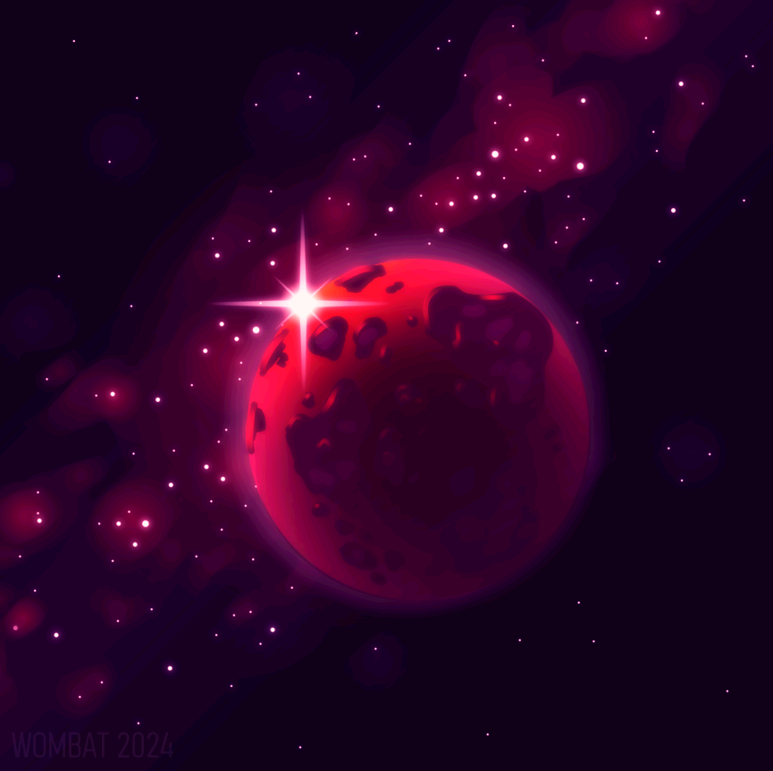

Wombat
I'm Gabriel, a mainly self-taught artist and programmer, and welcome to my portfolio. Here, I showcase my diverse creative works, ranging from modding, to game development, to digital art.
Across all artistic mediums, I specialise in crafting unique and detailed environments. To me, the diversity of environments is truly limitless, and it's a way to explore your imagination to the absolute fullest.